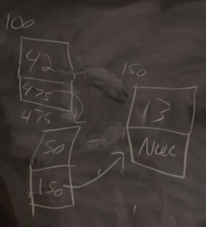
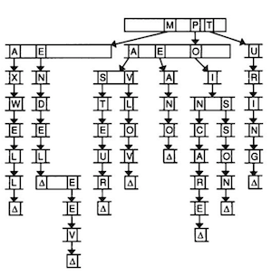

Class notes: Data Structures
Table of Contents
1 Linked Lists
So far, arrays had to be a fixed size at the time of initialization. If we wanted to add to our array, we would have to initialize a bigger array, and copy the values from the original array. But the running time of resizing an array is now \(O(n)\), where \(n\) is the size of the original array.
We can use a function called realloc, which reallocates memory. We can pass in
the address of our memory and the new amount we want, and our operating system
will return a new address, where we have that much contiguous memory. It will
also copy the array for us to the new location. But this operation will cost a
linear amount of time, too, depending on how big our array is.
We can do the opposite, and ask for just enough memory for one element, like one integer, at a time. But they might be stored anywhere in the heap, so we need a way to link each element to the next, via a stored pointer.
With this data structure, called a linked list, we lose the ability to randomly access elements. For example, we can no longer access the 5th element of the list by calculating where it is, in constant time. (Since we know arrays store elements back-to-back, we can add 1, or 4, or the size of our element, to calculate addresses.) Instead, we have to follow each element, one at a time.
And we create a linked list by allocating, for each element, enough memory for both the value, and a pointer to the next element. We'll call these nodes:

We have three nodes at various addresses in memory, 100, 150, and
475. Each node has the value we want to store, and also a pointer to the next
node. The final node has a pointer of NULL, indicating the end of our linked
list.
In code, we might create our own struct called node, with an int and a
pointer to the next node called next:
typedef struct node { int n; struct node *next; } node;
We start this struct with typedef struct node so that we can refer to a node
inside our struct.
The running time of inserting a node into a sorted list, now, is \(O(n)\), since we have to follow each node to check their values. There's more logic and running time, but we don't need to decide on a fixed size for our list now. And if we were to insert nodes in unsorted order, the running time would be O(1), since we can just add it to the front of the list. We can also keep an additional pointer to the last node, calling it "last", or we can even have each node store two pointers, one to the previous node and one to the next node, so we can move forwards and backwards.
Let's see how we might do this in code. First, we can store a fixed number of integers in an array:
#include <cs50.h> #include <stdio.h> int main(void) { // Prompt for number of numbers int capacity; do { capacity = get_int("Capacity: "); } while (capacity < 1); // Memory for numbers int numbers[capacity]; // Prompt for numbers int size = 0; while (size < capacity) { // Prompt for number int number = get_int("Number: "); // Add to list numbers[size] = number; size++; } // Print numbers for (int i = 0; i < size; i++) { printf("%i\n", numbers[i]); } }
We get a capacity from the user, and create an array of size capacity. Then,
we keep adding numbers to the array, until we reach the capacity. Then, we print
each number in the array. But our program is limited to a capacity we choose
initially.
We can size an array dynamically:
#include <cs50.h> #include <stdio.h> int main(void) { // Memory for numbers int *numbers = NULL; int capacity = 0; // Prompt for numbers (until EOF) int size = 0; while (true) { // Prompt for number int number = get_int("Number: "); // Check for EOF if (number == INT_MAX) { break; } // Check whether enough space for number if (size == capacity) { // Allocate space for number int *tmp = realloc(numbers, sizeof(int) * (size + 1)); if (!tmp) { if (numbers) { free(numbers); } return 1; } numbers = tmp; capacity++; } // Add number to list numbers[size] = number; size++; } // Print numbers printf("\n"); for (int i = 0; i < size; i++) { printf("%i\n", numbers[i]); } // Free memory if (numbers) { free(numbers); } }
We get one number at a time. First, we initialize a pointer called numbers, but
we don't initialize it yet. We track the capacity of our array, as well as the
size of the array so far. Then, we get one number at a time from the
user. get_int will return INT_MAX if we indicate EOF, or "end of file" as
the end to our input (control + d in the terminal), so if that happens, we can
break out of the loop. If we've reached our capacity for the numbers
array, we use realloc to reallocate enough space for an additional integer in
the array. We check that realloc returned a pointer that isn't null, and if
not, free the existing numbers array if we have one, and return 1. If we
do get enough space, then we can add the new number to the array. Finally, we
can print each number in the array, and free the array.
Now let's write the same program, using a linked list:
#include <cs50.h> #include <stdio.h> typedef struct node { int number; struct node *next; } node; int main(void) { // Memory for numbers node *numbers = NULL; // Prompt for numbers (until EOF) while (true) { // Prompt for number int number = get_int("number: "); // Check for EOF if (number == INT_MAX) { break; } // Allocate space for number node *n = malloc(sizeof(node)); if (!n) { return 1; } // Add number to list n->number = number; n->next = NULL; if (numbers) { for (node *ptr = numbers; ptr != NULL; ptr = ptr->next) { if (!ptr->next) { ptr->next = n; break; } } } else { numbers = n; } } // Print numbers printf("\n"); for (node *ptr = numbers; ptr != NULL; ptr = ptr->next) { printf("%i\n", ptr->number); } // Free memory node *ptr = numbers; while (ptr != NULL) { node *next = ptr->next; free(ptr); ptr = next; } }
The beginning of our program is essentially the same, though we define node at
the top of this program.
Next, we allocate enough memory for a new node and point to it with a pointer
n. If n was null after we called malloc, then we exit with an error. With
the -> syntax, we can follow a pointer to get a variable in a struct, so we
store the new number into the node n points to, along with NULL for the
next pointer. (If n was a node and not a pointer, we would use the
n.number syntax.)
Then, if numbers is a pointer, we create a temporary pointer ptr to follow
our linked list. We start with ptr = numbers. Inside our loop, if ptr
doesn't have a next pointer (i.e. it's the last node in our linked list), we
set the next pointer to n and break. Otherwise, our loop continues, and our
temporary pointer ptr becomes ptr->next, i.e. we look at the next node.
If we didn't have an existing numbers pointer, we can just set it to n, or
the start of our new list.
Finally, we print the numbers by following the linked list in the same way, and
we also free each node as we follow its next pointer.
2 Hash table
If we had an unsorted array or linked list storing names, we would have to look through each value, one at a time.
We, as humans, might make smaller lists where each person whose name starts with
"A" will be in one list, "B" in another, and so on. We can represent this
concept with a hash table, where each value to be stored is hashed by a
hash function. The resulting hash might be a number, and in this case might
be 0 for a string that starts with A, 1 for a string that starts with B, and
so on, but the important part is that we can use that number to index into some
array. The array, in turn, will have a linked list for each letter of the
alphabet (or more generally, a linked list for each bucket), and so this data
structure is called a hash table.
Now, each linked list (in our example of strings) will only be, on average, 1/26th the size of a list with all the strings together. In the worst case, all the strings will end up in the same bucket (if they happen to start with the same letter), and we would have \(O(n)\) running time, like an unsorted array. We can also use a different hash function, which might distribute our elements more evenly. But in the real world, our running time is likely to be much lower with a hash table. And we can even have more buckets in our hash table, so each list is an even smaller proportion.
3 Tree
A tree is another data structure where each node points to two other nodes, one to the left (with a smaller value) and one to the right (with a larger value):

Now, we can easily do binary search, and since each node is pointing to another, we can also insert nodes into the tree without moving all of them around as we would have to in an array. Recursively searching this tree would look something like:
typedef struct node { int n; struct node *left; struct node *right; } node; ... bool search(int n, node *tree) { if (tree == NULL) { return false; } else if (n < tree->n) { return search(n, tree->left); } else if (n > tree->n) { return search(n, tree->right); } else { return true; } }
4 Trie
We can use another data structure called a trie (pronounced like "try", and is short for "retrieval"):

Imagine we want to store a dictionary of words efficiently, and be able to access each one in constant time. A trie is like a tree, but each node is an array. Each array will have each letter, A-Z, stored. For each word, the first letter will point to an array, where the next valid letter will point to another array, and so on, until we reach something indicating the end of a valid word. If our word isn't in the trie, then one of the arrays won't have a pointer or terminating character for our word.